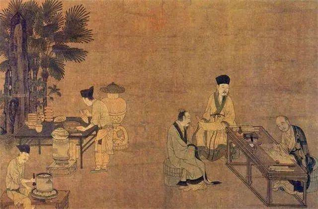
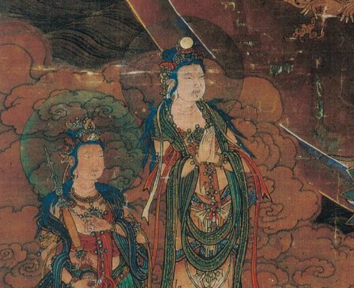

Song DynastyWooden sculptures began to prevail in the Song Dynasty, and the artistic level reached the peak. The wooden sculptures of the Song Dynasty that can be seen now are often regarded as iconic collections in European, American and national museums. Song dynasty statues used artistic techniques to express the characteristics of characters in real life. Affected by the secularization of Buddhism, the Song Dynasty used secular aesthetic taste to shape the Buddha statues. The treatment of the pleated clothes was completely different from the surreal and super-idealized methods of the Tang Dynasty. It has completely separated from foreign art models and expresses the unique aesthetic taste and artistic style of the Han nation. , Has a fresh and simple naturalistic atmosphere.
BodhisattvaBodhisattva is the abbreviation for "Bodhi Sadai". Free translation: Taoist sentient beings, enlightened sentient beings, great sentient sentient beings, sentient sentient beings of Taoism. It means the person who seeks the Tao and the great enlightenment, and the person who seeks the Tao with the great heart. A bodhisattva is a person who assists the Buddha in spreading the Dharma and rescues all living beings. Bodhisattva was a male image in ancient Indian Buddhism. After spreading to China, as the belief in Bodhisattva became deeply rooted in the hearts of the people and its deep human touch for the world, it gradually turned into a gentle and kind female image.